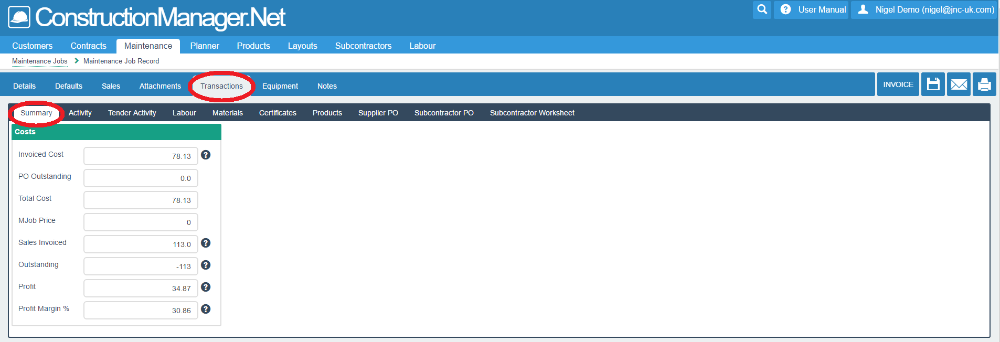
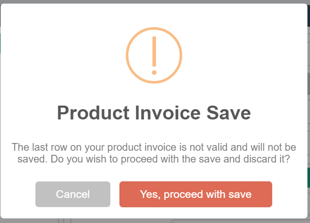
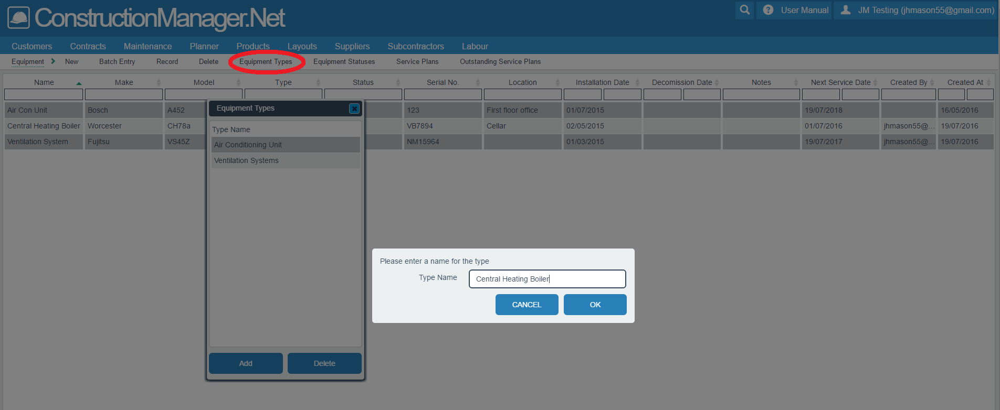

This module enables you to create, modify and monitor your maintenance jobs.
The Maintenance module has been designed to provide specific functionality for small maintenance types of work. For example:
To access Maintenance, select the Maintenance>Maintenance Jobs tab on the main menu. This will open the following screen:

This displays a list of all maintenance jobs on your system. The list can be manipulated in the usual way - see Manipulating Lists..
To create a new job, click on the New button. This will open the following screen, under the details>job information tab. This data is used by the office, rather than the on-site engineer.
N.B. Jobs can also be created from the Quotes module - see Quotes. In that case, highlight a line and click on the Edit button. Either way, the screen below is displayed.

Data to be entered includes:
N.B. Don't forget to keep saving your data - click the "Save" button - circled in red above at top right.
To edit an existing job, select a job from the list and then click on the appropriate button - circled in red above. This will open screens in identical format to those used when Creating a New Job.
To delete an existing job, select a job from the list and then click on the appropriate button - circled in red above. You will be asked to confirm your selection. Warning – you cannot retrieve a deleted Maintenance Job. It is normally better to set the status to Cancelled.
To change status on an existing job, select a job or range of jobs from the list and then click on the Change Status button - circled in red above. This will open screens as shown below.

The following options are available:
A second selection screen will then be displayed, where you can select the job status that you want your selected jobs to change to. Click OK or Cancel.
View Transactions relating to this M-job by clicking on the appropriate tabs - circled in red below.
This will open the following profit and loss screen for the selected job:

Then click on the Activity tab - circled in red below. This will display the following screen:
This shows any transactions that have been entered, from a variety of sources. In this case, we are seeing some labour, materials and purchase order activity, that have been entered against the job.
To allocate an engineer to a job, you need to select the Visit Information Tab
- circled in red below at top left. This will open the following screen:
On this screen, you can perform the following functions:
N.B. Visits can also be created in the Planner module. The visit will then appear in the visit information tab. It should be created in one place or the other, but not both.
You can add Attachments by clicking on the appropriate tab - circled in red below at top left.
This will open the following screen:

This screen is split in half:
You can use Notes to record details or telephone calls about a job
by clicking on the appropriate tab - circled in red below at top left. This will open the following screen:

Type a note in the main box, and then click the Add Note button - circled in red above at bottom right. Notes already entered are displayed under the note entry box.
Maintenance Invoices are created from the job record. There are settings which will determine which fields from the Mjob are loaded into the invoice. These are found in Construction Manager 50 (desktop version) in Settings>Defaults>Maintenance. There are 5 types of invoice that can be created. These are selected in the sales type.
This is used for a lump sum price invoice. Enter the value to be invoiced in the Mjob Value. Any field from the Mjob record can be printed on the invoice. Invoice layout design will be required to include the fields you require. We recommend that for this type of invoice you use the work carried out field for the invoice text and this can be printed on the invoice.
Once the price and details have been entered, the invoice is generated by selecting the invoice button in the Mjob Record or the Invoice button on the Maintenance Job List.
This will then prepare data to be invoiced, and display as shown in the screen below:

If you are happy to proceed, click on the Save Invoices button. This will display another prompt:

Select an option as required to proceed. A further screen will be displayed, as below:

This is the last stage of invoicing, where you select to Post to Sage - click on button circled in red, top right. Before you post, you can view the product lines, and can update customer information - tabs circled in red, top left. If you do update data, don't forget to save - click on button circled in red, top right.
Select Sales Type = Product Invoice. Then select Sales Tab and Product Invoice.

In the screen above, the invoice details can be entered as product items, line by line.
N.B. Don't forget to keep saving your data - click the "Save" button - circled in red above at top right.
When you click Save, you may be presented with a screen as below. This means that product invoice data lines are incomplete - if you proceed with Save, incomplete lines will not be saved.
This invoice type can only be used if you have the Quote module and have created the Mjob from a quote.
In this case, the invoice type should already be set to quote invoice. Simply press the invoice button and a detailed invoice will be produced from the quote.
To use this invoice type, you have to have set up Schedule of Rates first.
Choose sales type = Schedule of Rates and save. To enter the schedule, go to Sales then select Schedule. In the screen below, you can build the invoice from the selected schedule. Once completed and saved, the invoice is produced in the same way as the other types.

Before using this invoice type, you may want to update the Default Transaction Markup information for this job, by clicking on the appropriate tab - circled in red below at top left. This will open the following screen:

The default values are stored in Construction Manager 50 (desktop), under Settings>Defaults>Maintenance.
Once the mark up values are correct, the invoice will be produced in the normal way.
You can create individual or group invoices from the main maintenance jobs list - select one of the tabs circled in red below. This will open a standard selection box as shown below.

If you select to "Invoice" M-jobs 10021 and 10022 as a current selection, the following screen will be displayed:

You can see that two seperate invoices have been created, one for each Job.
If you select "Group Invoice" M-jobs 10021 and 10022, the following screen will be displayed:

You can see that one combined invoice has been created, for two Jobs.
If you are happy to proceed, click on the Save Invoices button. This will display another prompt:
Select an option as required to proceed. A further screen will be displayed, as below:
This is the last stage of invoicing, where you select to Post to Sage - click on button circled in red, top right. Before you post, you can view the product lines, and can update customer information - tabs circled in red, top left. If you do update data, don't forget to save - click on button circled in red, top right.
To run a selection of reports on an existing job, select a job from the list and then click on the Reports button - circled in red below. This will open a selection box as shown below.

Pick a report from the drop down list, and click the Select button. The report will be displayed in the usual Windows manner - you can then choose to print it.
Maintenance Progress provides a job costing report screen for selected jobs. To access the Maintenance Progress List, select the Maintenance Jobs tab on the main menu. Use the search and filter functions to select the jobs you want on your report - e.g. select complete jobs for the current month.
Select the Job Progress tab and the following selection box will be displayed:
Enter a transaction date range. N.B. - this is the date range for the transaction costs and sales for the report. This is different to the date selection on the Maintenance job List.
Click OK, and a new list will be displayed of all maintenance jobs on your system, showing data that relates to the financial status of the job. The list can be manipulated in the usual way - see Manipulating Lists.
To access the Visit List, select the Maintenance>Visit List tab on the main menu. This will open the following screen:
This displays a list of all visits on your system. The list can be manipulated in the usual way - see Manipulating Lists. The following options are available from this list:
The Equipment Register allows you to maintain a list of equipment, such as air conditioning units, which are located at customers' sites, and associated service plans.
To access the Equipment Register, select the Maintenance>Equipment Register tab on the main menu. This will open the following screen:
This displays a list of equipment on your system. The list can be manipulated in the usual way - see Manipulating Lists..
First you need to do some system setup.
To access Service Plans, select the Equipment>Service Plans tab. The following screen will be displayed:
Here you can add or edit Service Plans, by clicking on one of the highlighted tabs.
The following screen will be displayed:The following data needs to be entered: it will be used as defaults when a Service Plan is attached to a unit of equipment.
N.B. Don't forget to save your data - click on the Save button.
Records can be deleted in the usual way, by selecting the Delete tab and then confirming.
To access Equipment Types, select the Equipment Types tab. The following screen will be displayed:
Here you can add or delete Equipment types.
To access Equipment Statuses, select the Equipment Statuses tab. The following screen will be displayed:
Here you can add or delete Equipment statuses. You can hide units of equipment on subsequent displays by checking the Hidden option.
To create a new equipment record, click on the New button. This will open the following screen, under the Equipment>New tab. Alternatively, double-click on an existing record to edit.
The first screen to be updated is displayed as follows:

Data to be entered includes:
N.B. Don't forget to save your data - click on the button circled in red, top right.
The next screen to be updated is displayed as follows:
This screen is split in two halves:
N.B. Don't forget to save your data - click on the Savebutton.
This screen displays a list of completed service jobs for this unit of equipment.
This screen is used to attach sub-units of equipment to a parent unit.
To delete an existing equipment record, highlight an existing record and then click on the Delete button. Confirm your choice and then the record will be deleted.
The Batch Entry option gives you a fast method to enter large quantities of new data, either from a batch entry screen or from an Excel spreadsheet import.
To access Batch Entry, select the Equipment>Batch Entry tab. The following screen will be displayed:
You can now:
Clicking the Import button will display a screen where you can select a spreadsheet to import from. Only Excel files with an extension of .xls or .xlsx can be used.
Select a spreadsheet in the standard Microsoft fashion and click the Import Equipment button. Another screen will then be displayed.
You will then be asked for the following details:
Now click the Read Data button. The following screen will be displayed:
After clicking the Template button, the following screen will be displayed:
This allows you to create, delete or use a selected template for column assignments.
To access Outstanding Service Plans, select the Equipment>Outstanding Service Plans tab. The following screen will be displayed:
This screen displays a list of Service Plans that are due (or overdue) to be actioned. Select records that you want to process, and then click the Process Selected Plans tab - highlighted in red.
This process will create Maintenance Jobs for the selected plans and they will disappear from the Outstanding Plans List.
This option displays a list of all the available site addresses and allows you to create and edit those addresses. The list can be manipulated in the usual way - see Manipulating Lists. Access this option via Maintenance>Site Addresses, and the following screen will be displayed:

To create a new address or edit an existing selected address, select the appropriate option from the top of the list (circled in red above). Either option will bring up the following screen:
Enter data into the relevant fields. The first line of the address should go into the "Name" field - this is used for indentification/searching. N.B. - Don't forget to click on the "Save" button ( (circled in red, top right).
To delete an address, select an address, click on "Delete" and confirm You should not delete an address that has been used on a job, as the address details will be lost.
This option utilises Google Maps to provide a visual, mapped means of viewing the location of a mobile phone or engineer. The GPS option must be switched on, on the mobile phone. Select the GPS Tracking option under Maintenance, and the following screen appears:
On this example, 2 selections have been ticked:
N.B. You can mouse-hover over markers to see the precise address.
The next screen shows the other two options that can be used:
On this example, 2 selections have been ticked/selected: